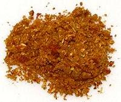

 |
Rasam Podi, UdupiIndia - Udupi, Karnataka - Saarina Pudi | ||||
| Makes: Effort: Sched: DoAhead: |
1-1/2 cups ** 1 hr Yes |
"Rasam" indicates this powder is used to flavor sour tamarind soups called Rasams, but it has many other uses in Udupi cuisine, one of the strictest vegetarian cuisines. | |||
| This podi is not as red as some you see in photos because it is not wet with coconut oil - see Note-4 for commentary. | |||||
|
------ 1 1/4 3 1 ------ 30 45 1/8 |
--- c c T t --- t |
-- Dry Roast Coriander seeds Cumin seeds Fenugreek seeds Mustard seeds ----------- Red Byadagi Chili (1) Curry Leaves (2) Asafoetida (opt). (3) |
Make - (1 hr - 30 min work)
|